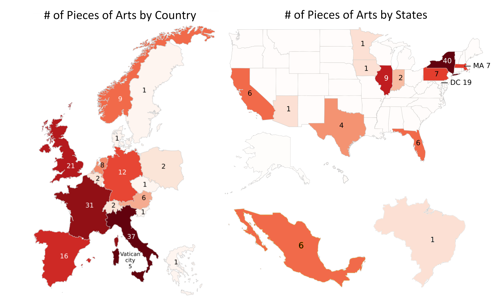

Where to Find the Most Famous Art
DATA 211 Final Project by Jinyang Liu
The aim of the project is to set up an interactive map with the locations of notable artworks by famous european and american artists marked up. The tooltip contains the image of the painting, its title, artist, and location. There are 274 artworks of 42 artists in total.
All data webscrapped from https://totallyhistory.com/art-history/famous-artists/
